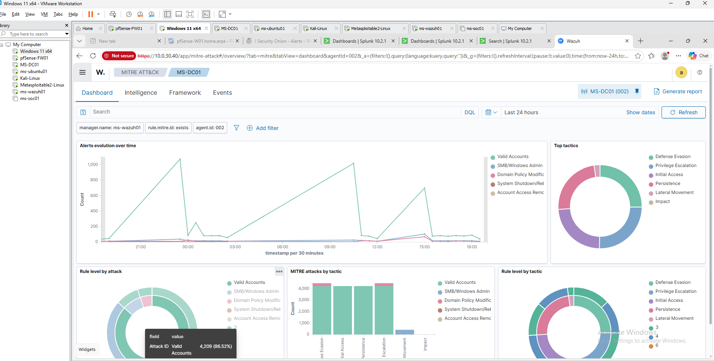

Executive Summary
This write-up documents a proactive threat hunting exercise performed within the MaryShield Cyber Lab. The investigation combined SIEM, endpoint, network, firewall, and Windows telemetry to identify and correlate suspicious activity beyond individual alerts.
Hunting Hypothesis
The hunt focused on determining whether suspicious reconnaissance, authentication, process, or network activity could be identified by correlating telemetry from multiple defensive platforms.
Data Sources
- Splunk Enterprise
- Wazuh XDR
- Security Onion
- pfSense
- Windows Event Logs
- Sysmon
- Zeek
- Suricata
Initial Hunt

Splunk Investigation

Wazuh Investigation

Security Onion Investigation

Evidence Correlation
Events were correlated using source and destination IP addresses, hostnames, users, ports, protocols, timestamps, and alert metadata.

Timeline

MITRE ATT&CK Mapping

Findings
Suspicious behavior was more accurately evaluated when endpoint and network telemetry were reviewed together rather than as isolated alerts.
Recommendations
- Maintain broad telemetry coverage.
- Develop repeatable hunting hypotheses.
- Correlate identity, endpoint, and network evidence.
- Maintain synchronized system time.
- Develop reusable hunting queries.
- Document investigation outcomes.
Lessons Learned
Threat hunting requires context, correlation, and analyst judgment rather than relying solely on automated alerting.